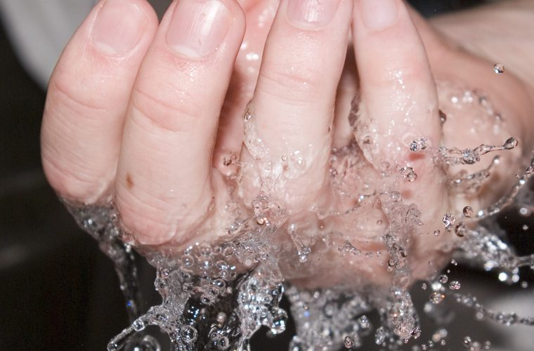
Public health
Raising awareness around sanitation issues, from safe water to hand washing, with the people who live with the problem every day.
Read the brief →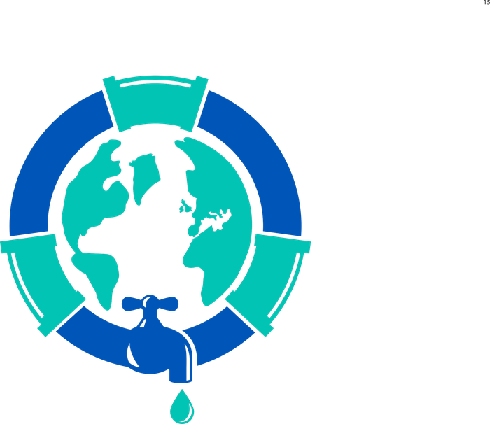
Community Plumbing Challenge WorldSkills Foundation Join usWorldSkills Foundation · IAPMO · World Plumbing Council
Design, Construction, Education:
Action for Public Health
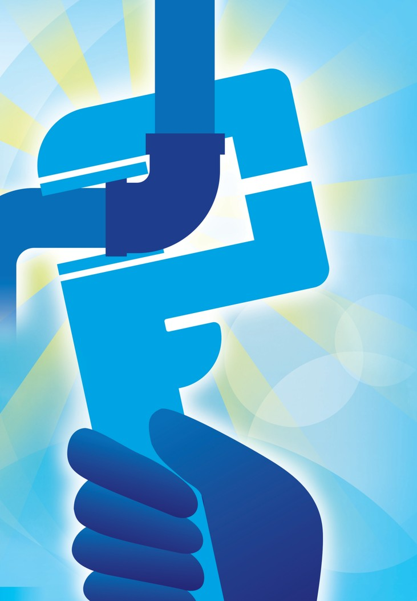
The Challenge
The Community Plumbing Challenge is a combined initiative of the WorldSkills Foundation, IAPMO and the World Plumbing Council. It brings passion, creativity and skilled expertise directly to communities, achieving small but sustainable results that empower and improve living conditions.

Raising awareness around sanitation issues, from safe water to hand washing, with the people who live with the problem every day.
Read the brief →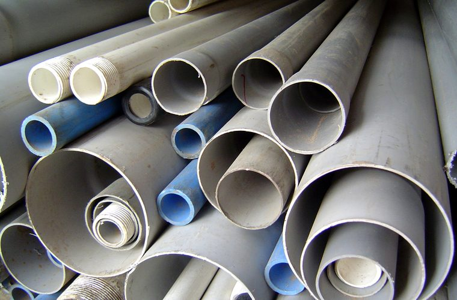
Multimedia resources explaining how wastewater systems are installed, repaired and kept running long after the event closes.
See how it works →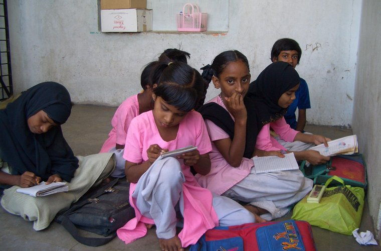
Champions and Experts work side by side with local tradespeople and students — everybody teaches, everybody learns.
Meet the team →Video gallery
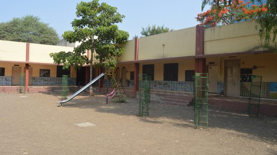
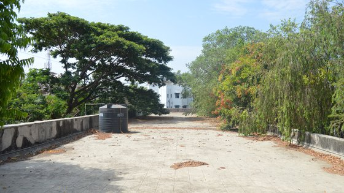
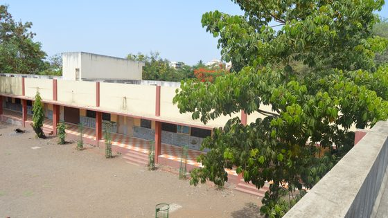
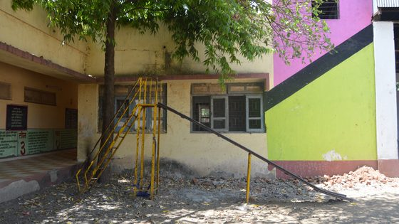
Photo gallery
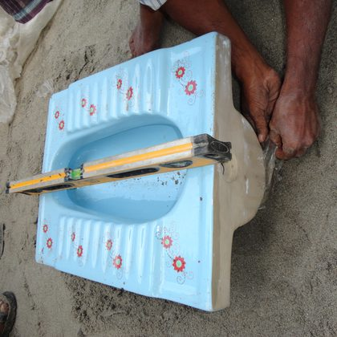
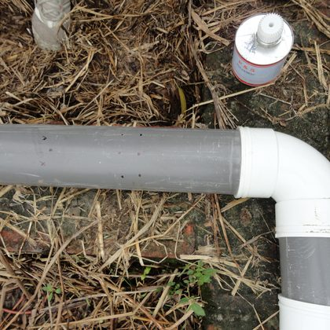
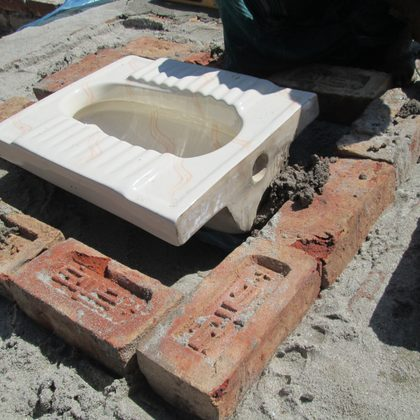
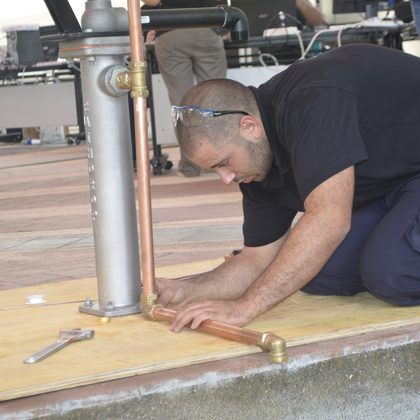
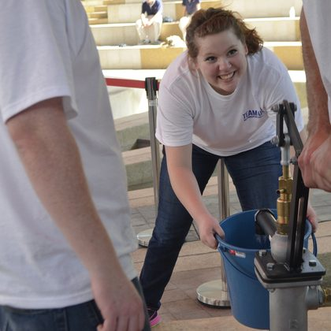
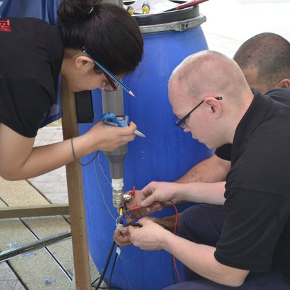
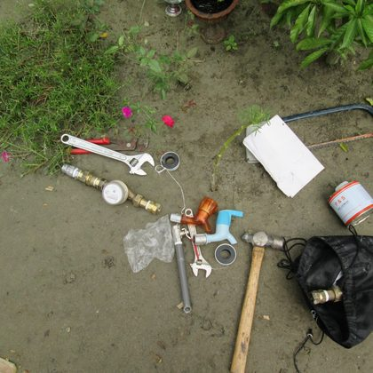
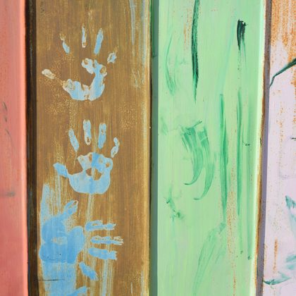
Team information
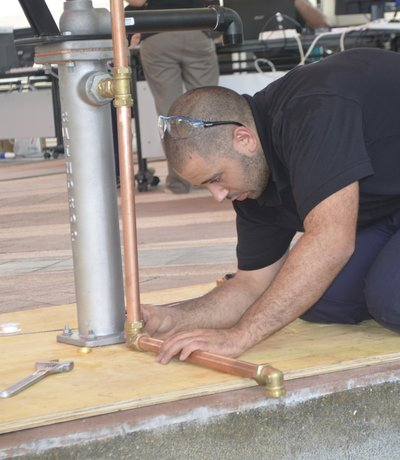
Team leader · Plumbing & Heating
WorldSkills Champion 2013. Leads the site survey and the wastewater design for Maha Nagar Palika School No 125.
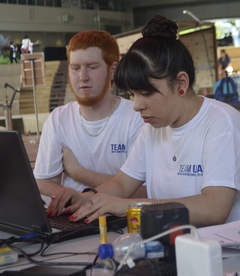
Expert · Sanitary systems
Twelve years on IAPMO code committees. Runs the Open Studio sessions with local tradespeople every afternoon.
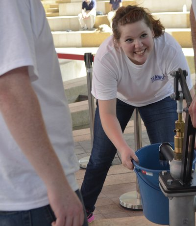
Champion · Water supply
Responsible for the rainwater harvesting tanks and for training the school caretakers in routine maintenance.
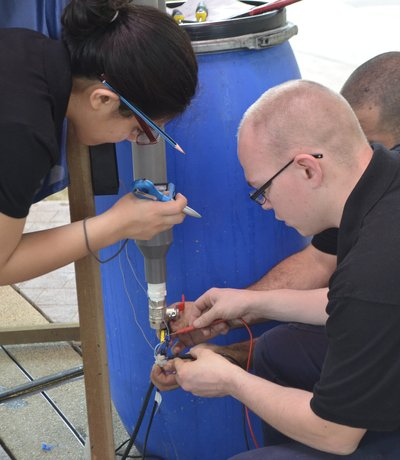
Community liaison · Nashik
Connects the CPC team with families, teachers and the municipality so the work keeps living after we leave.
Resource downloads
Every CPC event delivers a package of open multimedia resources. Download them, translate them, print them and use them in your own community.
Download all (48 MB)Our partners
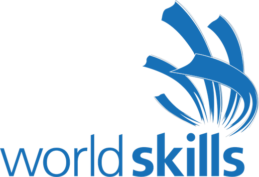
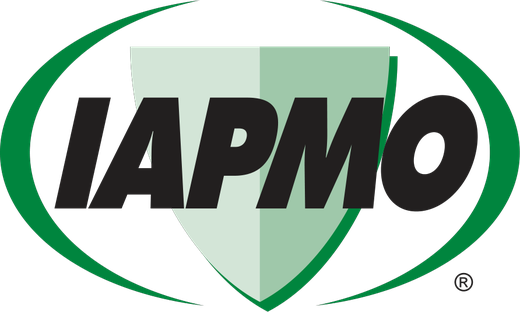
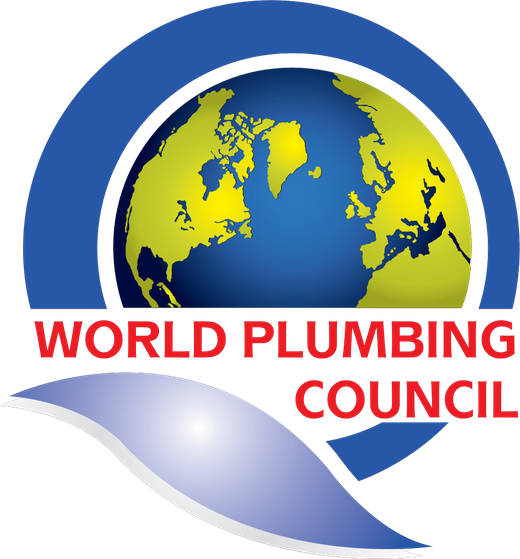
Open Studio: 2–5 November 2015 · Community Forum: 5 November 2015
Social media feed
#CommunityPlumbingChallenge
Day 3 in Nashik: the new sanitary block is watertight and the school is back in business. #CommunityPlumbingChallenge
Open Studio is full again. Everybody teaches, everybody learns.
Proud to stand with WorldSkills Foundation and IAPMO. Safe plumbing protects the health of the nation — and it starts in schools.
Community Forum streaming from Mukti Dham.
Watch live